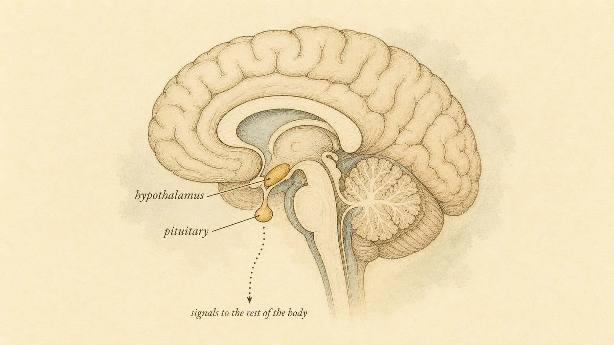
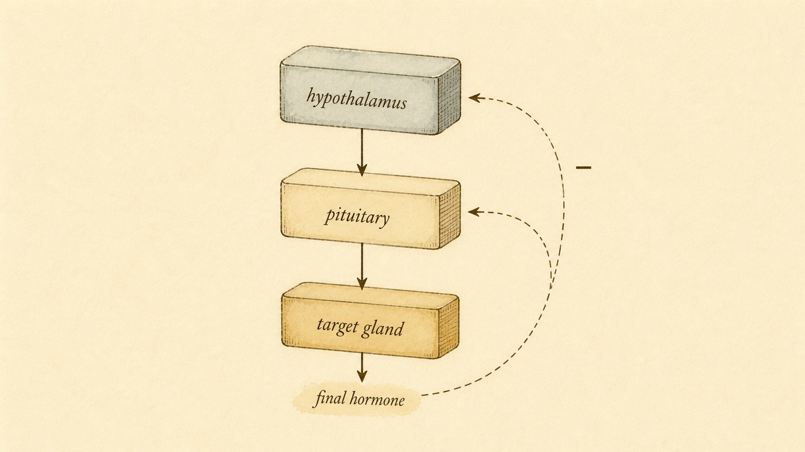

Mission Control: The Hypothalamus and Pituitary
How a brain region the size of an almond runs the entire endocrine system through one repeating template.
In Chapter 1 you learned that hormones are mail: chemical messages dropped into the bloodstream, addressed to whatever cell happens to carry the right receptor. That raises an obvious question. If the body is mailing letters all day long, who decides what gets written, when it goes out, and how much to send? A mail system without a sorting office is just chaos in envelopes.
This chapter introduces the headquarters. At the base of your brain, tucked just above the roof of your mouth, sits a cluster of neurons that reads your internal and external world and translates it into chemical orders. Hanging beneath it on a thin stalk is a gland the size of a pea that takes those orders and broadcasts them to the rest of the body. Together they form the command center of the whole endocrine system. And once you understand how they work, every hormone system you study for the rest of this course becomes a variation on a single, learnable pattern.
A note on how to read this chapter. Everything here is about how the system is built and how it behaves, not about diagnosing or fixing anyone. You are a learner building a mental model, not a clinician working up a case. Keep that frame the whole way through, because the payoff of understanding the machinery is that you stop guessing about it, and you get much sharper about the exact point where understanding runs out and a qualified clinician's judgment has to take over. We will mark that line explicitly before the chapter ends.
The bridge between two languages
Your body runs on two communication systems, and they speak different languages. The nervous system is fast and electrical: signals fire down axons in milliseconds, precise and short-lived, like a text message. The endocrine system is slow and chemical: hormones drift through the blood over seconds to hours, diffuse and long-lasting, like a memo posted to the whole building. For most of the day these two systems handle different jobs. But some situations need both. A stressful meeting, a cold morning, a missed meal, the fading light at dusk, all of these are sensed by the nervous system but require a sustained, body-wide chemical response. Something has to translate the electrical language into the chemical one.
That translator is the hypothalamus. It is a small region of the brain, roughly four grams of tissue, sitting below the thalamus and above the pituitary gland. What makes it special is that it is both. Its cells are genuine neurons, wired into the rest of the brain, receiving electrical input about stress, temperature, light, blood pressure, hunger, thirst, and emotion. But certain of those neurons do something unusual: instead of releasing neurotransmitters onto another neuron, they release hormones into the blood (Shahid et al., 2023). The hypothalamus is, in the most literal sense, the place where the nervous system becomes the endocrine system. It is the neuro-endocrine bridge.
Take that "both" seriously, because it is the reason the hypothalamus can do a job nothing else in the body can. A pure neuron is fast but local; it fires and it is done. A pure gland is slow but blind; it secretes on a schedule or in response to a chemical it can measure, but it cannot read your mood or the light coming through the window. The hypothalamus reads the fast, rich, context-heavy world the way a neuron does, then commits that reading to a slow, durable chemical instruction the way a gland does. It converts the electrical present into a chemical near-future. Almost every "the body somehow knew to adjust" story you have heard, from the way a cold room ramps up metabolism to the way a long stretch of poor sleep drags on your hormones, passes through this conversion step.

Just below the hypothalamus, connected by that thin stalk, hangs the pituitary gland. For a century it carried the nickname "the master gland," because the hormones it releases command other glands all over the body: the thyroid, the adrenals, the ovaries and testes. The nickname is half right. The pituitary does dispatch the orders, but it does not write them. It takes its instructions from the hypothalamus directly above it. So if you want to be precise, the pituitary is the master gland's loyal lieutenant, and the hypothalamus is the actual general. Keep that correction in your pocket; we will come back to it, because "master gland" is one of the phrases people most often misunderstand.
The reason the correction matters is not pedantry. If you believe the pituitary writes its own orders, then every hormone problem looks like a pituitary problem, and you miss the whole floor above it. Once you know the pituitary is a lieutenant taking dictation, you start asking the better question automatically: is the pituitary the problem, or is it faithfully relaying an instruction from a hypothalamus that has itself gone quiet or gone loud? That single reframe is the seed of the troubleshooting logic we build later in this chapter. The words we use for anatomy quietly shape the questions we are able to ask.
Here is a person to carry through the chapter, because an abstract system is easier to hold onto when it has a face attached. Farah is a learner in this course. She is not a patient; she is someone building the same model you are, and she keeps a running list of things she used to believe about hormones that turned out to be half-truths. At the top of her list, in capital letters, she has written "MASTER GLAND." She grew up hearing that the pituitary runs everything, and she is a little annoyed to learn it is really the middle manager. We will check in with Farah at each turn, not because her intuitions are always right, but because the places she trips are exactly the places most people trip. Watching her correct her own model is a faster way to correct yours.
Two pituitaries in one
Here is where people get the anatomy wrong, so let's get it right once. The pituitary is not one gland. It is two glands of completely different origin, fused into one structure, and they connect to the hypothalamus in two completely different ways. Understanding this split makes everything downstream easier.
The posterior pituitary: a direct extension of the brain
The back portion, the posterior pituitary, is not really a gland at all. It is nervous tissue, an outgrowth of the hypothalamus itself. Certain hypothalamic neurons send their long axons straight down into the posterior lobe and release their hormones, oxytocin and vasopressin (also called antidiuretic hormone), directly from those nerve endings into the bloodstream (Shahid et al., 2023). There is no relay, no second gland giving the order. The hypothalamus simply stores and squeezes these hormones out through a downward extension of itself. Think of it as the hypothalamus reaching its own hand down to drop a letter directly in the mailbox.
This design has a clean consequence worth registering now. Because the posterior pituitary is just nerve endings, its two hormones are made up in the hypothalamus, travel down inside the axons, and wait in storage until an electrical signal tells the nerve terminals to release them. That is why the posterior lobe behaves like part of the brain rather than part of the endocrine periphery: it is fast, it is neurally triggered, and it does not need a chemical courier to receive its orders because it never left home. Vasopressin defends your blood's water balance and oxytocin drives labor contractions and milk letdown, and both are released the way a reflex fires, not the way a gland idles. We will not spend this chapter on those two hormones, but the anatomical point matters: half of the "pituitary" is really displaced brain.
The anterior pituitary: a true gland under remote control
The front portion, the anterior pituitary, is the part that matters most for this chapter, and it works in a far more elegant way. It is a genuine endocrine gland made of hormone-producing cells, but it has no direct nerve connection to the hypothalamus. So how does the brain control it? Through a clever piece of plumbing called the hypophyseal portal system: a private network of tiny blood vessels that runs from the base of the hypothalamus down the stalk to the anterior pituitary (Rawindraraj et al., 2023).
Here is why that plumbing is brilliant. When a hypothalamic neuron wants to command the anterior pituitary, it releases a tiny amount of a signaling hormone into this private portal blood supply. That hormone travels just a few millimeters and arrives at the pituitary in a high, concentrated dose, before it ever gets diluted in the body's general circulation. A whisper that would be lost if shouted across the whole bloodstream becomes a clear, loud instruction because it is delivered down a dedicated pipe. The hypothalamus, in other words, gets to speak privately to the pituitary using chemistry, even though the two are not wired together by nerves.
Sit with the arithmetic of that for a moment, because it is the whole reason the portal system exists. An adult has roughly five liters of blood. If a hypothalamic neuron dumped its signaling molecule straight into that general pool, the molecule would be diluted into near-nothing before it ever reached a pituitary cell, and the "order" would be too faint to read. Instead, the neuron releases into a tiny, private volume of blood that goes almost nowhere else first. The concentration at the pituitary is therefore enormous compared to what the rest of the body ever sees. The portal system is the endocrine equivalent of a sealed pneumatic tube between two offices in the same building: the message is loud where it needs to be loud and invisible everywhere else.
This arrangement was not obvious, and working it out took decades. In the 1930s and 1940s the British physiologist Geoffrey Harris assembled the evidence that the anterior pituitary is controlled not by nerves running into it but by chemical factors carried in the blood of these portal vessels, released from nerve endings in the base of the hypothalamus (Charlton, 2008). Harris showed the direction of blood flow ran from hypothalamus to pituitary, and that cutting or blocking those vessels silenced the pituitary's response to the brain. His "neurohumoral" hypothesis, chemical control through a private blood supply rather than direct wiring, is the idea the whole rest of this chapter rests on. It is why we can say the general commands the lieutenant without a single nerve running between them.
Proving that these hypothalamic factors were real, identifiable molecules was a second, even more grueling chapter of the story. Roger Guillemin and Andrew Schally spent years and an almost absurd amount of raw material chasing them down. To isolate just one, thyrotropin-releasing factor, Guillemin's team processed the brains of roughly five million sheep before publishing its structure in 1969 (Baranwal et al., 2024). The work won them the Nobel Prize in 1977 and settled the question for good: the hypothalamus governs the pituitary through specific, diffusible peptide hormones. The general really does send written orders, and by the late 1970s we knew the alphabet those orders were written in.
Releasing and inhibiting hormones
The signals the hypothalamus sends down the portal system come in two flavors, and this is one of the most important and underappreciated facts in the whole system. The hypothalamus does not only say "go." It also says "stop." These two kinds of orders are the releasing hormones and the inhibiting hormones.
A releasing hormone tells the anterior pituitary to secrete one of its own hormones. An inhibiting hormone tells it to hold back. Some pituitary outputs are controlled mainly by an accelerator, some mainly by a brake, and some by both at once, with the final secretion set by the balance between them. Picture a dimmer switch rather than an on-off toggle: the actual brightness is the net of how hard the accelerator is pressed against how hard the brake is pressed. The full repertoire the hypothalamus can secrete includes several releasing factors and a couple of powerful inhibitors (Shahid et al., 2023):
The accelerators (releasing hormones)
CRH, corticotropin-releasing hormone, drives the stress axis. TRH, thyrotropin-releasing hormone, drives the thyroid axis. GnRH, gonadotropin-releasing hormone, drives the reproductive axis. GHRH, growth-hormone-releasing hormone, drives growth-hormone output. Each is a short peptide; each targets a specific cell type in the anterior pituitary. Notice that the naming is mercifully logical once you see it: a releasing hormone is usually named for the pituitary hormone it releases. Thyrotropin-releasing hormone releases thyrotropin, which is another name for thyroid-stimulating hormone (TSH). Corticotropin-releasing hormone releases corticotropin, which is another name for adrenocorticotropic hormone (ACTH). If you can read the name, you can read the target. That is one of the few places in endocrinology where the vocabulary is genuinely trying to help you.
The brakes (inhibiting hormones)
Somatostatin inhibits the release of growth hormone (and several other hormones). Dopamine, the same molecule famous for its role in reward and movement, here acts as the primary inhibitor of prolactin. This is worth a beat: prolactin is the one major anterior pituitary hormone whose default setting is "on." The hypothalamus has to actively suppress it. Cut the stalk that carries the dopamine signal, and prolactin rises, because you have removed the brake rather than the accelerator (Rawindraraj et al., 2023). That single fact explains a whole category of real-world findings, and it is a clean example of why knowing the direction of control matters more than memorizing names.
Slow down on prolactin, because it is the exception that teaches the rule. Every other axis in this chapter defaults to "off" and waits for a releasing hormone to switch it on. Prolactin defaults to "on" and waits for dopamine to switch it off. So the logic of failure inverts. For an accelerator-driven hormone, losing the connection between hypothalamus and pituitary means the hormone falls, because the "go" signal never arrives. For a brake-driven hormone like prolactin, losing that same connection means the hormone rises, because the "stop" signal never arrives. Same physical event, opposite result, and the only way to predict which way it goes is to know whether the hypothalamus was pressing an accelerator or a brake. Memorizing that prolactin is "controlled by dopamine" tells you nothing useful. Knowing that dopamine is a brake tells you exactly what happens when the brake line is cut.
The anterior pituitary, taking these orders, produces about seven hormones of its own: ACTH, TSH, follicle-stimulating hormone (FSH), luteinizing hormone (LH), growth hormone, prolactin, and beta-endorphin (Rawindraraj et al., 2023). Notice the pattern in the first four names. ACTH, TSH, FSH, and LH are not the hormones that do the final job in the body. They are middle-managers: their entire purpose is to travel to another gland and tell it to make the real product. ACTH tells the adrenal cortex to make cortisol. TSH tells the thyroid to make thyroid hormone. FSH and LH tell the gonads to make sex steroids. This middle-manager role is the heart of what we are about to build.
It is worth separating the two kinds of pituitary hormone cleanly, because they behave differently and mixing them up causes real confusion later. Some pituitary hormones are tropic, meaning their job is to act on another endocrine gland and make it secrete: ACTH, TSH, FSH, and LH are all tropic. Others are direct-acting, meaning they skip the middle step and act on general body tissue themselves: growth hormone works largely on the liver, bone, and muscle, and prolactin works on the breast. The tropic ones build the three-level chains we are about to study. The direct-acting ones are only two levels deep, hypothalamus to pituitary to tissue, with no target gland in between. When you meet growth hormone and prolactin later in the course, do not go looking for their "target gland." They do not have one. That is a feature, not a gap in your notes.
The axis: the keystone idea of this course
That three-link chain has a name, and it is the single most important concept you will learn in these twelve chapters. It is called an axis. An axis is a three-level command chain that runs brain to pituitary to target gland:
Hypothalamus → Anterior pituitary → Target gland → Final hormone
The hypothalamus releases a small signal. The pituitary receives it and releases a larger signal, amplifying the message. The target gland receives that and produces the final hormone, the one with the real job to do in your tissues. Three floors of a building, each one passing an order down to the floor below, with the actual product made at the bottom.
But a one-way chain of command would be dangerous. If the brain just kept shouting "make more" with nothing to tell it when to stop, the final hormone would climb without limit. So every axis includes the feature you met in Chapter 1: negative feedback. The final hormone, once it builds up in the blood, loops back up to the top of the chain and quiets the very signals that produced it (Sheng et al., 2021). High cortisol tells the hypothalamus and pituitary to ease off on CRH and ACTH. High thyroid hormone tells them to ease off on TRH and TSH. The output silences its own command.
If you have ever wondered why negative feedback shows up in essentially every hormone system and almost never positive feedback, the reason is stability. A negative feedback loop is self-correcting: push the output up and the loop pushes back down, push it down and the loop pushes back up, so the level settles into a band and stays there. That is exactly what you want from a hormone that has to hold a tissue at a steady setting for hours or days. Positive feedback does the opposite. It amplifies any nudge, driving the output higher and higher until something forces it to stop. That runaway quality is useful in the rare moment when the body actually wants an explosive, all-or-nothing event, and we will meet one such moment in the reproductive axis. But as the standing design for a control system meant to keep things steady, positive feedback would be a catastrophe. Negative feedback is the default because steadiness is the goal.

This is the template. Master it once and you have mastered the structure of the thyroid system, the stress system, and the reproductive system all at once, because all three are built from exactly these parts. Here is the payoff that makes this chapter the keystone of the course: once you can draw a generic axis with its feedback loop, every specific system becomes a fill-in-the-blanks exercise. You will swap CRH, ACTH, and cortisol into the boxes for the stress axis. You will swap TRH, TSH, and thyroid hormone in for the thyroid axis. You will swap GnRH, LH/FSH, and sex steroids in for the reproductive axis. Same three boxes, same feedback arrow, different labels.
One idea inside the feedback loop deserves a name, because it will keep coming back: the set point. Negative feedback does not simply push the output toward zero or toward infinity. It defends a target value, the level the system is trying to hold, the way a thermostat defends a temperature you dialed in. Circulating final hormone is compared, in effect, against that target. Above it, the loop dials the command down; below it, the loop dials the command up. Everything the axis does is in service of parking the output near its set point. And here is the twist that becomes important later: the set point itself is not fixed. The brain can move it. When it does, the "normal" the system defends shifts, and a level that was fine yesterday can be defended as too high or too low today. Hold onto that, because it is where a lot of real-world confusion about hormones begins.
Why an amplifier in the middle?
One detail in that diagram deserves a second look, because it explains the design. Why have a middle layer at all? Why doesn't the hypothalamus just talk to the target gland directly?
The answer is amplification and control. A tiny pulse of releasing hormone from the hypothalamus, delivered down that private portal pipe, triggers the pituitary to release a much larger quantity of its own hormone, which in turn drives the target gland to pour out an even larger quantity of the final product. The signal gets bigger at each step, like a small movement of a thermostat dial producing a large blast from a furnace. The system can take a faint, energy-cheap signal in the brain and turn it into a powerful, body-wide chemical response.
Think about what that amplification buys the brain. Neurons are metabolically expensive and the hypothalamus is small; it cannot afford to manufacture cortisol or thyroid hormone in the quantities the body burns through every day. It does not have to. It only has to produce a trickle of a cheap peptide, and let two stages of amplification downstream turn that trickle into a flood at the tissues. This is leverage in the mechanical sense. A small effort at the top, applied through a chain that multiplies it, moves a large load at the bottom. The brain gets to run a body-wide chemical economy on a neuron's tiny budget.
The middle layer also adds a second point of control and a second place to apply the brakes. Negative feedback does not act at only one floor. Circulating final hormone pushes back on both the pituitary and the hypothalamus, and in some axes on the gland itself. In the stress axis, for example, cortisol restrains CRH release in the hypothalamus, restrains ACTH release in the pituitary, and even acts within the adrenal (Gjerstad et al., 2018). Multiple brakes on multiple floors make the system far more stable than a single switch ever could be. This is why the body builds three levels instead of one: more amplification, more places to regulate, more robustness.
There is a subtler benefit to having two brakes rather than one, and it is worth making explicit. A single control point is a single point of failure and a single point of rigidity. With brakes on both the hypothalamus and the pituitary, the system can be tuned at two different time scales and by two different sets of inputs. The pituitary's response to feedback can be fast and local, reacting to the hormone level in the blood right now. The hypothalamus's response can integrate slower, broader information, the time of day, the season, whether you are starving or fighting an infection, and shift the whole system's behavior accordingly. Two brakes are not redundancy for its own sake. They let a fast local correction and a slow contextual correction coexist in the same loop.
The three axes you will meet again
The rest of this course spends entire chapters on specific axes. Here is the preview, so you can see the template fill in three different ways. Notice as you read that the structure never changes. Only the labels do.
The HPA axis (stress)
The hypothalamic-pituitary-adrenal axis is the body's central stress system. The paraventricular nucleus of the hypothalamus releases CRH, which drives the anterior pituitary to release ACTH, which drives the adrenal cortex to release cortisol (Tsigos & Chrousos, 2002). Cortisol is the final hormone: it mobilizes energy, sharpens attention, and tunes the immune system. And cortisol loops back to suppress both CRH and ACTH, closing the loop (Sheng et al., 2021). When you feel the slow, grinding alertness of a high-stress week, you are feeling the output of this three-level cascade. We will give it a full chapter, including why its output rises and falls on a daily rhythm rather than holding steady.
The HPT axis (thyroid)
The hypothalamic-pituitary-thyroid axis sets your metabolic pace. TRH neurons in the paraventricular nucleus signal the pituitary thyrotrophs to release TSH, which drives the thyroid gland to release thyroid hormone (Fekete & Lechan, 2014). Circulating thyroid hormone feeds back on both the hypothalamus and the pituitary to keep its own level in a tight band. Fekete and Lechan note that this axis is not rigid; states like fasting, cold exposure, and infection deliberately shift its set point, which is your body adjusting its metabolic thermostat to circumstances. That single fact will reshape how you think about "slow metabolism" later, and it is the clearest example of the movable set point we flagged earlier: the thyroid axis is not defending one fixed number, it is defending whatever number the brain currently considers appropriate.
The HPG axis (reproduction)
The hypothalamic-pituitary-gonadal axis governs reproduction and sex hormones. GnRH from the hypothalamus drives the pituitary to release LH and FSH, the two gonadotropins, which drive the gonads to produce sex steroids and gametes (Koysombat et al., 2023). The final hormones, testosterone and estradiol, feed back on the brain and pituitary. This axis controls puberty, the menstrual cycle, and fertility, and as Koysombat and colleagues describe, clinicians can interrogate each level separately to find where a problem lives. That last point is exactly where we are heading next. The HPG axis is also the one that breaks the "always negative feedback" rule for a single dramatic moment, when rising estrogen flips to briefly encourage its own surge and trigger ovulation, but that is a special case we will handle in its own chapter rather than let it blur the default.
Farah tries this and it clicks in a way the textbook never did. She had been treating HPA, HPT, and HPG as three separate memorization jobs, three sets of hormones to cram. Now she sees them as one diagram wearing three costumes. She writes in the margin: "Stop memorizing hormones. Memorize the shape, then learn which three names hang on it." That is exactly the move this chapter is trying to install. The names are cheap once the shape is permanent. Nearly every time a learner feels buried under endocrine vocabulary, it is because they are collecting names without a frame to hang them on. Build the frame first.
Troubleshooting: which floor is broken?
Now for the reasoning skill that pays off in every system chapter to come. Because an axis has three levels, a problem with the final hormone could originate on any of the three floors. A low level of the final hormone might mean a broken factory at the bottom, a silent middle-manager in the pituitary, or a hypothalamus that stopped sending orders. The symptom, low final hormone, is the same in all three cases. So how do you tell them apart?
You use the feedback loop as a diagnostic tool. This is the elegant part. Remember that the final hormone normally pushes back up the chain to suppress the upstream signals. So the upstream signals carry information about what the body thinks the final hormone level is. Read the upstream signal, and the axis tells you where the fault lives. To be clear about scope before we go further: this is reasoning practice, a way to understand how the system reveals its own faults. It is not a procedure for evaluating a real person. The point is to see the logic, not to run it on anybody.
Case 1: the factory is broken (problem at the gland)
Suppose the target gland itself is damaged and cannot make the final hormone, even when ordered to. The final hormone falls. With less final hormone in the blood, there is less feedback pressure on the floors above, so the hypothalamus and pituitary, sensing the shortage, crank their signals up and up. The result is a telling combination: low final hormone with high upstream signals. The brain is screaming orders at a factory that cannot fill them. When you see a low output sitting beneath a sky-high pituitary signal, the fault is at the bottom. This is called a primary problem, meaning the primary gland itself.
Case 2: the orders stopped (problem upstream)
Now suppose the gland is perfectly healthy, but the pituitary or hypothalamus has gone quiet and stopped sending orders. With no command coming down, the gland sits idle and the final hormone falls. But this time the upstream signals are also low, because they are the source of the problem. The combination is low final hormone with low upstream signals: a quiet command center and an idle factory waiting for instructions that never come. When everything in the chain reads low, the fault lives higher up. This is a secondary problem (pituitary) or tertiary problem (hypothalamus).
Notice why one number can never answer the question and two numbers can. A single reading, the final hormone, tells you only that something is off, not where. It is a smoke alarm with no address. But the feedback loop has quietly stamped an address onto the upstream signal, because that signal is the system's own reaction to the output. Read the output and the upstream signal together and you are no longer looking at one measurement, you are looking at a relationship, and the relationship encodes the location. Low-with-high points down to the gland. Low-with-low points up to the command center. The logic is the same in every axis because the wiring is the same in every axis; only the names on the boxes change.
This is precisely the logic clinicians use to localize real reproductive, thyroid, and adrenal disorders. As Koysombat and colleagues (2023) describe for the HPG axis, measuring the gonadotropins alongside the sex steroids tells you whether a low sex-hormone level reflects a gonadal failure (high LH and FSH) or a problem in the brain and pituitary (low LH and FSH). The same two-reading trick works in every axis. The upstream signal is the clue. Read it against the output, and the feedback loop hands you the answer. Understanding this logic is the educational goal; ordering, interpreting, and acting on those tests in an actual person is clinical work, and it belongs to a qualified clinician.
Where education ends
We have just built a genuinely powerful reasoning tool, and this is exactly the moment to be clear about its limits, because a powerful tool used past its boundary does harm. The two-reading trick lets you understand how an axis reveals the location of a fault. It does not let you find a fault in a real person, and this course does not train you to.
Farah feels the pull here, and it is worth naming because most learners feel it too. Once the logic clicks, there is a strong temptation to run it on yourself, on a family member, on the numbers from a lab printout someone shows you. Resist it. Understanding the machinery makes you a better-informed learner and a clearer communicator; it does not make you the person who gets to decide what a given result means for a given human. Those are different jobs with different training and different responsibilities behind them. The most useful thing this chapter can do is make you fluent enough to recognize the shape of a problem and, in the same breath, to know that recognizing the shape is not the same as making the call.
One last refinement: it pulses
One simplification we have made deserves a quiet correction, because it changes how you should picture these systems. The diagrams make an axis look like a steady stream, a constant trickle of hormone holding a fixed level. It is not. Hormone output is delivered in pulses, and the feedback dynamics themselves generate rhythm.
Gjerstad and colleagues (2018) describe how glucocorticoid negative feedback, acting at every level of the HPA axis, produces both a daily (circadian) rhythm and a faster, roughly hourly (ultradian) pulsing of cortisol. The system is not a faucet held at a setting. It is more like a heartbeat: regular bursts whose frequency and size carry information. This is why a single hormone reading taken at one moment can mislead you. You may have caught the system at the top of a pulse or the bottom of a trough. The level matters, but so does the timing and the pattern.
Why would the body bother pulsing instead of holding a steady level? Two reasons that Gjerstad and colleagues make clear. First, pulsing keeps receptors responsive. A hormone held at a constant level tends to dull the tissues that receive it; they adapt to the steady signal and stop reacting strongly. Delivering the same hormone in rhythmic bursts keeps the receiving cells sensitive, the way an intermittent knock is easier to notice than a continuous hum. Second, a pulsing signal carries more information than a flat one. The brain can encode meaning in the frequency and the height of the pulses, not just their average, which gives the system a richer vocabulary than a single steady dial ever could. The rhythm is not noise on top of the signal. In these axes, the rhythm is part of the signal.
This ties directly back to the troubleshooting logic, and it is a caution worth carrying. If output arrives in pulses and rises and falls across the day, then a single measurement is a single frame from a moving picture. The clean "low output, read the upstream signal" story assumes you can trust the numbers you are holding, and in a pulsing, rhythmic system a lone reading can catch a trough that looks like a problem or a peak that hides one. This is one more reason the actual work of interpreting real results belongs to people trained to account for timing, rhythm, and context. For your purposes as a learner, the lesson is humility about any single number. For now, hold the clean version: three levels, a small signal amplified down the chain, and a final hormone that loops back to quiet its own command. The pulsing is a refinement on top of that skeleton, not a replacement for it. Get the skeleton solid first.
The hypothalamus governs the pituitary not by wires but by chemistry, sending specific peptide hormones down a private bloodstream to command a gland it never touches.
A plain-language summary of the neurohumoral hypothesis and its Nobel-winning confirmation (Charlton, 2008; Baranwal et al., 2024)
Key Takeaways
- The hypothalamus is the neuro-endocrine bridge: neurons that read the nervous system's signals and respond by secreting hormones, translating electrical language into chemical orders.
- The pituitary is two glands in one. The posterior pituitary is a direct downward extension of hypothalamic neurons; the anterior pituitary is a true gland controlled remotely through the hypophyseal portal blood system, a private, high-concentration supply worked out by Geoffrey Harris.
- The hypothalamus controls the anterior pituitary with both releasing hormones (accelerators like CRH, TRH, GnRH) and inhibiting hormones (brakes like somatostatin and dopamine). Direction of control matters more than the names: prolactin's default is "on," held down by the dopamine brake.
- An axis is the keystone template: hypothalamus → pituitary → target gland → final hormone, with the final hormone amplified at each step and looping back through negative feedback to defend a set point and quiet the chain above it.
- The HPA (stress/cortisol), HPT (thyroid), and HPG (reproductive) axes are the same three-box template with different labels. Learn the template once and the rest is fill-in-the-blanks.
- A low final hormone can originate on any of three floors. Read the upstream signal to localize it: low output with high upstream signals points to the gland (primary); low output with low upstream signals points higher up (secondary or tertiary).
- Real axes pulse on circadian and ultradian rhythms, so a single hormone reading can mislead. Pattern and timing matter, not just the level.
- Understanding the machinery is education, not clinical authority. Diagnosing, interpreting tests, and treating belong to a qualified clinician; your job is to explain the mechanism clearly and know where your understanding stops.
You can now sketch the generic command chain and reason about where it can break. In Chapter 3 we descend one floor and meet the messengers themselves up close: how hormones are built, how they travel through the blood, and how a target cell decides whether to listen. After that, Chapters 4 through 7 take the axis template you just learned and run it through the thyroid, the adrenal stress system, and the sex hormones, one full system at a time. Every one of them is the three boxes you just drew.
References
Baranwal, A., Rastogi, P., & Dixit, A. (2024). Roger Guillemin: A century of life, a legacy of endocrine discoveries. Cureus, 16(9), e68536. https://pmc.ncbi.nlm.nih.gov/articles/PMC11449051/
Charlton, H. (2008). Hypothalamic control of anterior pituitary function: A history. Journal of Neuroendocrinology, 20(6), 641-646. https://doi.org/10.1111/j.1365-2826.2008.01718.x
Fekete, C., & Lechan, R. M. (2014). Central regulation of hypothalamic-pituitary-thyroid axis under physiological and pathophysiological conditions. Endocrine Reviews, 35(2), 159-194. https://doi.org/10.1210/er.2013-1087
Gjerstad, J. K., Lightman, S. L., & Spiga, F. (2018). Role of glucocorticoid negative feedback in the regulation of HPA axis pulsatility. Stress, 21(5), 403-416. https://doi.org/10.1080/10253890.2018.1470238
Koysombat, K., Dhillo, W. S., & Abbara, A. (2023). Assessing hypothalamic pituitary gonadal function in reproductive disorders. Clinical Science, 137(11), 863-879. https://doi.org/10.1042/CS20220146
Rawindraraj, A. D., Basit, H., & Jialal, I. (2023). Physiology, anterior pituitary. StatPearls. https://www.ncbi.nlm.nih.gov/books/NBK499898/
Shahid, Z., Asuka, E., & Singh, G. (2023). Physiology, hypothalamus. StatPearls. https://www.ncbi.nlm.nih.gov/books/NBK535380/
Sheng, J. A., Bales, N. J., Myers, S. A., Bautista, A. I., Roueinfar, M., Hale, T. M., & Handa, R. J. (2021). The hypothalamic-pituitary-adrenal axis: Development, programming actions of hormones, and maternal-fetal interactions. Frontiers in Behavioral Neuroscience, 14, 601939. https://doi.org/10.3389/fnbeh.2020.601939
Tsigos, C., & Chrousos, G. P. (2002). Hypothalamic-pituitary-adrenal axis, neuroendocrine factors and stress. Journal of Psychosomatic Research, 53(4), 865-871. https://doi.org/10.1016/s0022-3999(02)00429-4